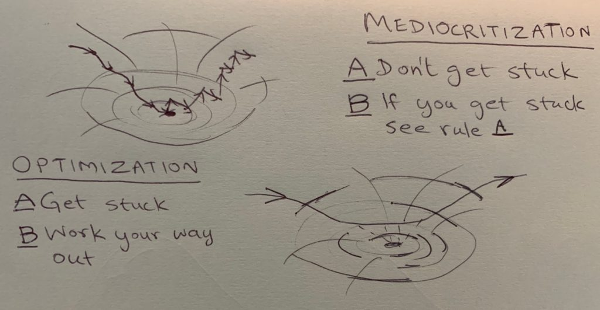

Chapter 4
You've probably heard of optimization, that nihilistic process of descending into valleys or ascending up hills till you get stuck, having an existential crisis, and then flailing randomly to climb out (or down) again. Mediocritization is the opposite of that: never getting stuck in the first place. Here's a picture.

The cartoon on the left is optimization. The descent is a relatively orderly process ("gradient descent" takes you in the local steepest incline direction). The getting-out-again part is necessarily disorderly. You must inject randomness. The cartoon on the right is mediocritization: don't get stuck.
When people talk of "global" optimization, they usually mean that over a long period, you flail less wildly to get out of valleys because the chances that you've already found the deepest valley get higher as you explore more. This process goes by names like "annealing schedule".
Global or local, the thing about optimization is that it likes being stuck at the bottoms of valleys or the tops of hills, so long as it knows it is the deepest valley or highest hill. The thing about mediocritization is that it does not like either condition. Mediocritizers likes to live on slopes rather than tops or bottoms. The reason is subtle: on a slope, there is always a way to tell directions apart. The environment is different in different directions. It is anisotropic. Mediocritization is an environmental anisotropy maintaining process (not a satisficing process as naive optimizers tend to assume).
Anisotropy is information in disguise. Optimizers get stuck at the bottoms of valleys or tops of hills because the world is locally flat. No direction is any different from any other. There are no meaningful decisions to make relative to the external world because it is the same in all directions, or isotropic. This is why you need to inject randomness to break out (mathematically, the gradient goes to zero, so can no longer serve as a directional discriminant).
Generalizing, in mediocritization, you always want to have a way available to continue the game that is better than random. This means you need some anisotropic pattern of information in the environment to act on.
Three examples of mediocritization:
- When Tiger Woods was king of the hill (a position he just regained after a long time), his closest competitors performed worse by about a stroke on average. Apparently, when Tiger is in good form, there's no point trying too hard. See this paper by Jennifer Brown..
- My buddy Jason Ho, who just had this entertaining profile written about him, is on the surface, a caricature of an optimizer techbro. But look again: he trained hard and placed second in an amateur body-building competition, and then moved on to newer challenges rather than obsessing over getting to #1.
- When I was in grad school, and occasionally hit by mild panic at the thought of somebody scooping me on the research I was working on, I came up with a coping technique I called "+1". For any problem, I'd always take some time to identify and write down the next problem I would work on if somebody else scooped me on the current one. That way, I'd hit the ground running if I was scooped.
Carsean moral of the 3 stories: optimization is how you play to win finite games, but mediocritization is how you play to continue the game.